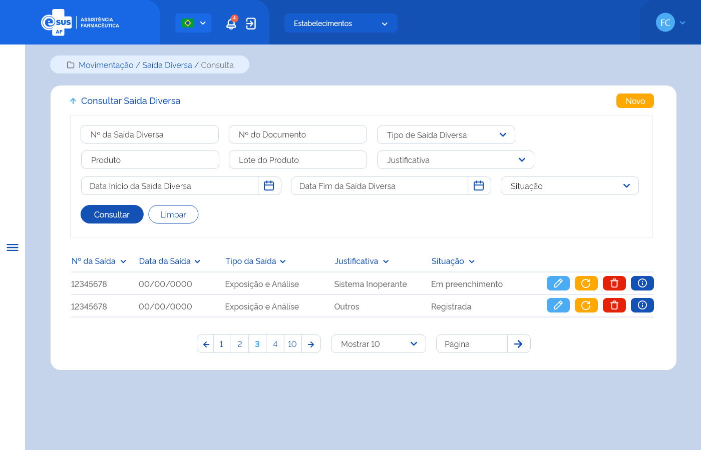

ETE023 - Consultar Saída
Descrição (modelo história de usuário)
Como usuário quero consultar a(s) saída(s) diversa(s) de produto(s) realizada(s) no estabelecimento de saúde logado
Protótipo 001

Elementos de Tela
- Bread Crumb – “Movimentação / Saída Diversa / Consulta”
- Título da página – “Consultar Saída Diversa”
- “Seta” – M - retorna para a Tela Inicial/Dashboard
- “Novo” – BT - direciona para a Tela de Cadastrar Saída Diversa
- Filtros para consulta:
- Nº da Saída Diversa – N (11)
- Nº do Documento – A (20)
- Tipo de Saída Diversa – SU
- Produto – AC (500)
- Lote do Produto – A (20)
- Justificativa – SU
- Data Início da Saída Diversa – D (dd/mm/aaaa)
- Data Fim da Saída Diversa – D (dd/mm/aaaa)
- Situação – SM
- “Consultar” – BT
- “Limpar” – BT
- Lista de registro da(s) saída(s) diversa(s) no estabelecimento logado:
- Buscar por – A / AC
- Nº da Saída
- Data da Saída
- Tipo da Saída
- Justificativa
- Situação
- Ações conforme situação:
- Editar – BT - direciona para a Tela de Editar Saída Diversa
- Excluir – BT
- Estornar – BT
- Detalhar - direciona para a Tela de Detalhar Saída Diversa
- Ordenação nas colunas
- Paginação
- Registro por página
- Ir para página
Legenda
TIPO: A = Alfanumérico, N = Numérico, D = Data, M = Imagem, BT = Botão, LK = Link, SU = Seleção Única, SM = Seleção Múltipla, AC = Autocomplete, * = Obrigatório.
Critérios de Aceite
- O usuário somente poderá acessar a funcionalidade caso tenha permissão; RGN001
- O acesso à funcionalidade é dado através do menu lateral no item “Movimentação” quando acionar o subitem “Saída Diversa”;
- Quando o usuário acessar a funcionalidade, o sistema deve apresentar os filtros de pesquisa e somente apresentar a lista de resultado da consulta quando a opção “Consultar” for acionada; RGN004
- No campo “Tipo de Saída Diversa” o sistema deve apresentar as opções: Ajuste de Estoque, Amostra, Exposição e Análise, Apreensão Sanitária, Empréstimo, Perda, Requisição, Roubo, “Saída por Dispensação”, Saída por Estorno de Distribuição, Saída por Estorno de Entrada, Transferência, Usuário SUS, Validade Vencida;
- Quando o campo “Produto” for informado, o sistema deve:
- Apresentar a lista de produtos ativos no sistema que correspondam ao valor informado no campo autocomplete a partir da indicação do 3º caractere, consultando por nome do produto ou princípio ativo do medicamento, código de barras e CATMAT Raiz; RGN015
- Validar se o produto informado foi encontrado. Caso não, o sistema deve realçar o campo e alertar ao usuário; MSG015
- Recuperar e apresentar a(s) saída(s) diversa(s) cujo ao menos um do(s) produto(s) relacionado(s) a ela, possua um dos dados informados: CATMAT, forma farmacêutica ou princípio ativo do medicamento.
- Quando o campo “Lote do Produto” for informado, o sistema deve recuperar e apresentar a(s) saída(s) diversa(s) cujo ao menos um dos produtos relacionados a ela, possua o dado informado;
- No campo “Justificativa” o sistema deve apresentar as opções: Diferença de Estoque, Quebra do produto/medicamento, Recebimento maior que a demanda, Recebimento próximo da validade, Roubo, Sistema Inoperante, Outros;
- No campo “Situação”, o sistema deve apresentar as opções: Em preenchimento, Registrada e Estornada;
- Quando o usuário acionar a opção “Consultar”, o sistema deve recuperar e apresentar o(s) registro(s) de saída diversa do estabelecimento logado de acordo com o(s) filtro(s) informado(s). Caso não seja informado nenhum filtro, o sistema deve recuperar e apresentar todo(s) o(s) registro(s) de saída diversa do estabelecimento logado. Caso algum campo retorne vazio, o sistema deve apresentar a descrição “Sem informação”;
- O sistema, não encontrando a(s) saída(s) diversa(s) para os filtros informados, deve informar que o(s) registro(s) não foram encontrados; MSG041
- O sistema, encontrando a(s) saída(s) diversa(s), deve apresentá-la(s) em ordem decrescente de data da saída com os respectivos dados: Nº da Saída, Data da Saída, Tipo da Saída, Justificativa e Situação e as ações desejáveis para cada registro;
- O sistema deve permitir excluir, editar, estornar ou detalhar um registro de saída diversa;
- O sistema deve apresentar as ações conforme:
- Para registro com situação “Em preenchimento” as opções “Excluir”, “Editar” e “Detalhar”;
- Para registro com situação “Registrada” as opções “Estornar” e “Detalhar”, exceto para a situação a seguir:
- Para a(s) saída(s) diversa(s) do tipo “Requisição”, Saída por Dispensação”, “Saída por Estorno de Distribuição” e “Saída por Estorno de Entrada”, o sistema deve apresentar apenas a opção “Detalhar”, uma vez que se trata(m) de saída(s) diversa(s) gerada(s) automaticamente pelo sistema para o controle de estoque.
- Para registro com situação “Estornada” a opção “Detalhar”.
- As grids com resultados de consultas devem permitir a ordenação por coluna, paginação, seleção de registro por página e filtrar o resultado da consulta; RGN004
- Quando o usuário acionar a opção “Novo”, o sistema deve direcionar para a tela de cadastro de uma nova saída diversa; ETE024
- Quando o usuário acionar a opção “Limpar”, o sistema deve limpar o(s) filtro(s) informado(s), o resultado consulta e permanecer na tela de consultar saída diversa;
- Quando o usuário acionar a opção “Voltar”, o sistema deve retornar para a tela inicial do sistema (dashboard);
- Quando o usuário acionar a opção “Editar”, o sistema deve direcionar para a tela de edição de uma saída diversa; ETE025
- Quando o usuário acionar a opção “Excluir”, o sistema deve apresentar a mensagem de confirmação ao usuário. Caso o usuário confirme a ação, o sistema deve excluir o registro da saída diversa e deixar de apresentá-lo no resultado da consulta. Caso a ação não seja confirmada, o sistema permanece na tela de consulta. A exclusão física somente será possível para saída(s) diversa(s) com situação “Em preenchimento”; MSG010 MSG046 RGN016
- Quando o usuário acionar a opção “Estornar”, o sistema deve apresentar a mensagem de confirmação ao usuário. Caso o usuário confirme a ação, o sistema estorna a saída diversa do(s) produto(s), altera a situação da saída diversa para “Estornada” e credita o(s) produto(s) no estoque do estabelecimento da saída diversa estornada, considerando lote, validade e programa de saúde, através da criação de um registro de entrada. Caso a ação não seja confirmada, o sistema permanecerá na tela de consulta; MSG016 MSG047 RGN005
- Ao realizar o estorno da saída diversa do(s) produto(s), o sistema deve:
- Creditar o(s) produto(s) no estoque do estabelecimento da saída estornada, através da criação de um registro de entrada, gravando as seguintes informações:
- Modalidade de Licitação = “Saída Diversa”;
- Tipo de Movimentação = “Entrada por Estorno de Saída Diversa”;
- Fornecedor = CNES ou CNPJ do estabelecimento que realizou saída;
- Tipo de Documento = “Estorno de Saída Diversa”;
- Número do Documento = Número da saída que foi estornada;
- No detalhamento do produto:
- Princípio ativo ou Descrição do produto
- Concentração + Forma farmacêutica (se for medicamento)
- CATMAT
- Fabricante
- Lote
- Validade
- Valor Unitário
- Quantidade
- Situação do registro de entrada como “Armazenada”;
- Alterar a situação do registro da saída diversa para “Estornada”. RGN005 RGN032
- O sistema, identificando que uma saída diversa de produto(s) foi estornada, deve creditar a quantidade no saldo deste(s), considerando o lote, validade e programa de saúde e atualizar a posição de estoque do estabelecimento que realizou o estorno da saída diversa; RGN033
- Quando o usuário acionar a opção “Detalhar”, o sistema deve direcionar para a tela de detalhamento dos dados da saída diversa; ETE026
- O sistema deve gravar a data, hora e CPF e nome do usuário que a executou qualquer ação de alteração na situação do registro. RGN005